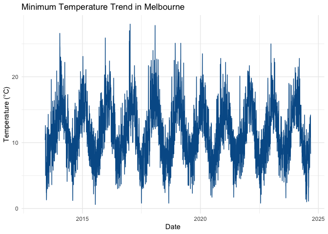

pkgdown site.
The melbWeather package provides tools to analyze and visualize Melbourne’s weather data, including minimum and maximum temperature trends over time. It is designed for students and analysts looking to explore temperature patterns in a user-friendly way using R and Shiny.
Installation
You can install the development version of melbWeather from GitHub with: GitHub with:
# Install the 'remotes' package if you haven't already
install.packages("remotes")
remotes::install_github("ETC5523-2024/assignment-4-packages-and-shiny-apps-tdew0002")Getting Started
Load the package with:
Cleaning Raw Weather Data
The clean_weather_data() function is created and used to clean raw weather data files before performing analysis. Here’s an example of how to use it:
# Assuming you have raw CSV files for minimum and maximum temperatures
min_temp_path <- "data-raw/melbourne_weather_min.csv"
max_temp_path <- "data-raw/melbourne_weather_max.csv"
# Clean the data using the clean_weather_data function
weather_data <- clean_weather_data(min_temp_path, max_temp_path)
# View the first few rows of the cleaned data
head(weather_data)The clean_weather_data() function combines the data from both files, standardises column names, and formats dates for further analysis.
Weather data
User does not need to use the clean_weather_data() function, instead the dataset created by clean_weather_data() function in this package can be directly access by using weather_data, which contains daily weather records for Melbourne, including minimum and maximum temperatures.
# Load Melbourne weather data
data("weather_data")
# Display the first few rows of the data
head(weather_data)
#> year month day minimum_temperature_degree_c maximum_temperature_degree_c
#> 1 2013 01 01 NA NA
#> 2 2013 01 02 NA NA
#> 3 2013 01 03 NA NA
#> 4 2013 01 04 NA NA
#> 5 2013 01 05 NA NA
#> 6 2013 01 06 NA NAExample Analysis
Here is an example of summarising a basic dataset:
summary(weather_data$minimum_temperature_degree_c)
#> Min. 1st Qu. Median Mean 3rd Qu. Max. NA's
#> 0.60 8.60 11.30 11.57 14.50 28.00 152You can also embed plots, for example:
library(ggplot2)
ggplot(weather_data, aes(x = as.Date(paste(year, month, day, sep = "-")), y = minimum_temperature_degree_c)) +
geom_line(color = "#005b96") +
labs(
title = "Minimum Temperature Trend in Melbourne",
x = "Date",
y = "Temperature (°C)"
) +
theme_minimal()
Launch the Shiny App
The melbWeather package includes an interactive Shiny app for exploring weather data. You can access the app directly online:
Launch the Interactive Shiny App
To run the app locally, use the following command:
# Launch the Shiny app
startApp()Vignettes
For a detailed tutorial and examples on how to use melbWeather, check out the vignette:
# View the vignette after installing the package
vignette("melbWeather-introduction")The vignette provides step-by-step instructions on how to clean weather data, use the interactive Shiny app, and perform analyses with the melbWeather package.
Or read it online at the pkgdown site.
Aknowledgement
Data for this package is sourced from the Australian Bureau of Meteorology.
Key Sections of the README.Rmd
-
Package Introduction: Provides a brief overview of what the
melbWeatherpackage does. -
Installation: Includes instructions for installing the package using
remotes. - Getting Started: Shows how to load the package and access the main dataset.
-
Example Analysis: Demonstrates a simple plotting example using
ggplot2and theweather_datadataset. -
Shiny App: Explains how to launch the Shiny app locally and provides a link to the online version hosted on
shinyapps.io. -
Documentation and Vignettes: Directs users to the
pkgdownsite for full documentation and tutorials. - License and Acknowledgements: Mentions the license and credits the data source.